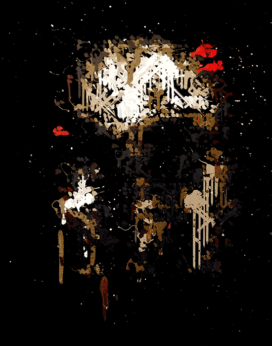

2017 · I
Emerging Faces
embodied autonomous creativity
Recognized as the first instance of paintings autonomously created by a robot, this series began with pure experiment. The artist gave his system just two instructions:
- 01Imagine a human face and paint it on the canvas.
- 02Stop as soon as you recognize a face.
This experiment allowed the interaction between GANs, physical paint, robotics and feedback loops to produce artworks that emerged from the system itself. By integrating the paint's chaotic physical inputs into the digital system, Van Arman pushed past the barrier of algorithmic determinism, creating an opening for a truly autonomous process to unfold. What emerged are haunting traces of machine creativity.
Only 44 canvases from this period remain.
